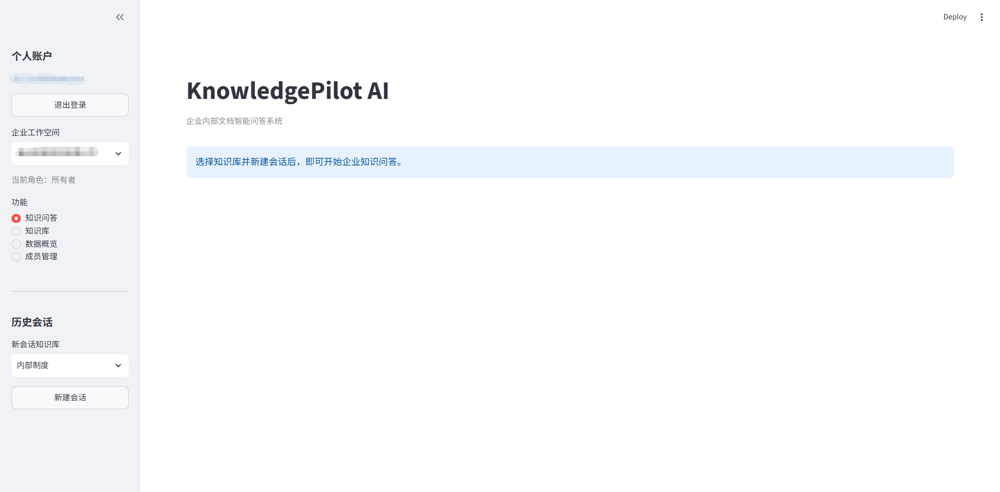
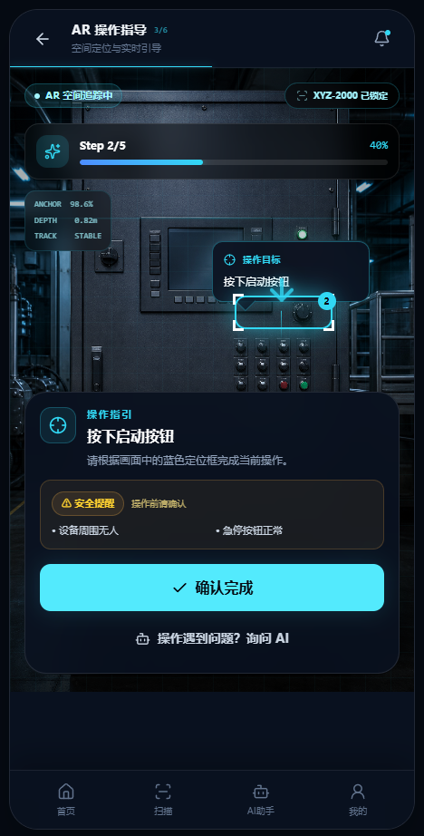

Project 01 · Core case KnowledgePilot 企业知识库AI助手 面向企业内部知识管理场景，通过RAG、Citation和拒答机制解决资料分散、检索效率低和AI回答缺乏可信依据的问题。 RAG AI SaaS 企业服务 3类 用户角色 6类 核心业务场景 32 / 32 RAG测试通过 查看 Case Study 产品 Demo GitHub 
Project 02 智维 AR Copilot 工业设备AR智能操作助手 针对新员工操作工业设备时学习成本高、说明书查找效率低的问题，设计AI + AR实时操作辅助方案。 AI AR Industrial 5 核心页面 / 状态 4 异常兜底场景 查看完整 Case Study → 